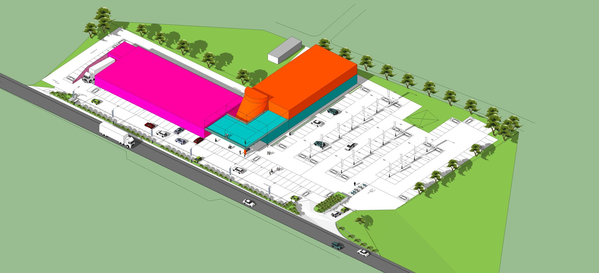
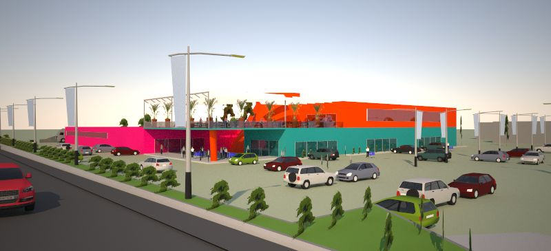
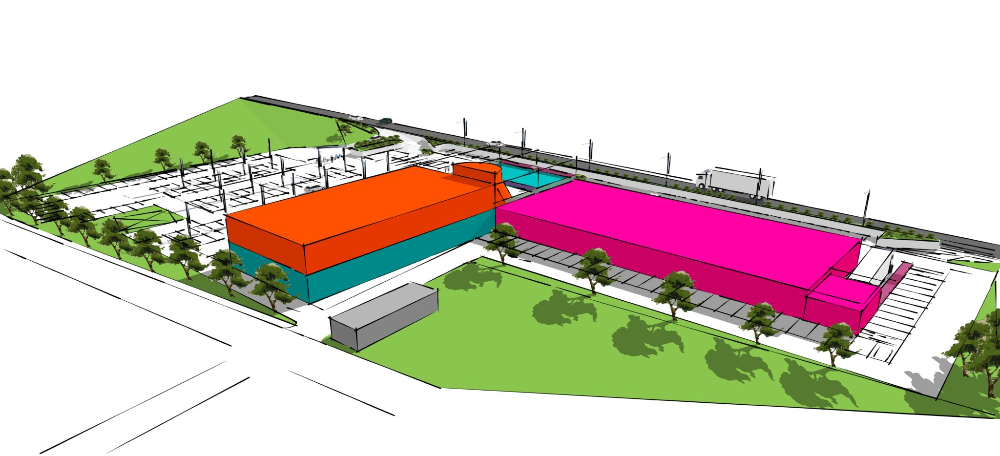

Terziario
Commercio, cinema, ristoro. Ma soprattutto: un luogo dove tornare.
Un polo di intrattenimento e servizi pensato per essere molto più della somma delle sue funzioni. Il cinema multisala è il cuore pulsante dell'intervento, attorno a lui si organizzano spazi commerciali, aree ristoro e luoghi di socialità, in un sistema architettonico unitario dove ogni volume ha un ruolo preciso e un'identità visiva riconoscibile. Colori forti, forme nette, una rooftop che guarda fuori. Un progetto che non vuole passare inosservato.